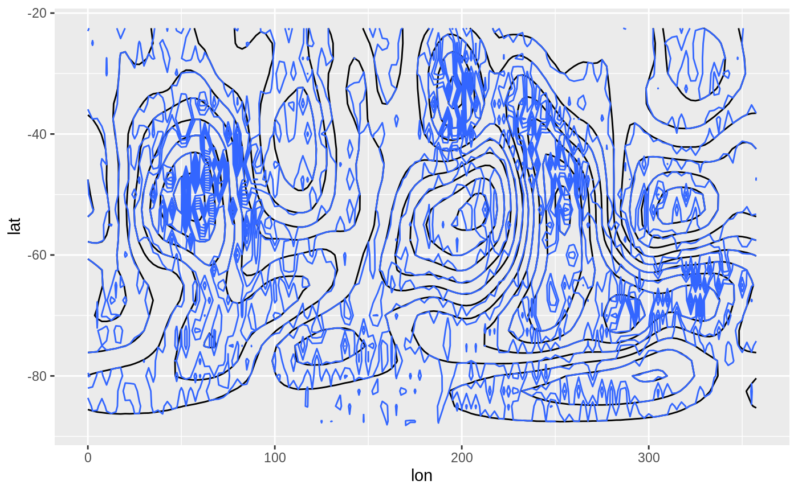
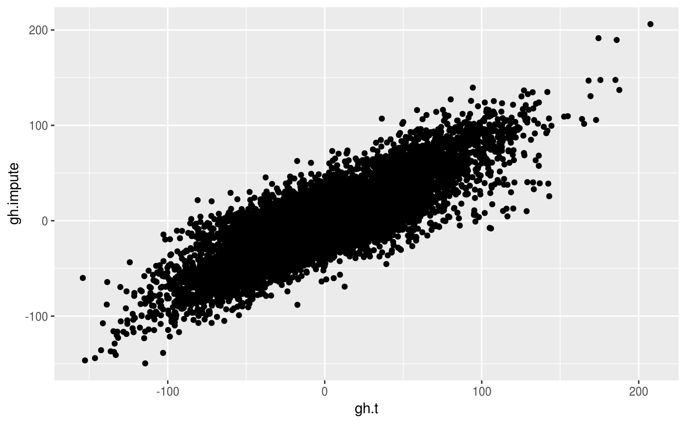

Imputes missing values via Data Interpolating Empirical Orthogonal Functions (DINEOF).
ImputeEOF(
formula,
max.eof = NULL,
data = NULL,
min.eof = 1,
tol = 0.01,
max.iter = 10000,
validation = NULL,
verbose = interactive()
)a formula to build the matrix that will be used in the SVD decomposition (see Details)
maximum and minimum number of singular values used for imputation
a data.frame
tolerance used for determining convergence
maximum iterations allowed for the algorithm
number of points to use in cross-validation (defaults to the maximum of 30 or 10% of the non NA points)
logical indicating whether to print progress
A vector of imputed values with attributes eof, which is the number of
singular values used in the final imputation; and rmse, which is the Root
Mean Square Error estimated from cross-validation.
Singular values can be computed over matrices so formula denotes how
to build a matrix from the data. It is a formula of the form VAR ~ LEFT | RIGHT
(see Formula::Formula) in which VAR is the variable whose values will
populate the matrix, and LEFT represent the variables used to make the rows
and RIGHT, the columns of the matrix.
Think it like "VAR as a function of LEFT and RIGHT".
Alternatively, if value.var is not NULL, it's possible to use the
(probably) more familiar data.table::dcast formula interface. In that case,
data must be provided.
If data is a matrix, the formula argument is ignored and the function
returns a matrix.
Beckers, J.-M., Barth, A., and Alvera-Azcárate, A.: DINEOF reconstruction of clouded images including error maps – application to the Sea-Surface Temperature around Corsican Island, Ocean Sci., 2, 183-199, doi:10.5194/os-2-183-2006 , 2006.
library(data.table)
data(geopotential)
geopotential <- copy(geopotential)
geopotential[, gh.t := Anomaly(gh), by = .(lat, lon, month(date))]
#> lon lat lev gh date gh.t
#> <num> <num> <int> <num> <Date> <num>
#> 1: 0.0 -22.5 700 3163.839 1990-01-01 -3.978597
#> 2: 2.5 -22.5 700 3162.516 1990-01-01 -3.736613
#> 3: 5.0 -22.5 700 3162.226 1990-01-01 -2.978516
#> 4: 7.5 -22.5 700 3162.323 1990-01-01 -2.500081
#> 5: 10.0 -22.5 700 3163.097 1990-01-01 -2.150594
#> ---
#> 290300: 347.5 -90.0 700 2671.484 1995-12-01 -18.526896
#> 290301: 350.0 -90.0 700 2671.484 1995-12-01 -18.526896
#> 290302: 352.5 -90.0 700 2671.484 1995-12-01 -18.526896
#> 290303: 355.0 -90.0 700 2671.484 1995-12-01 -18.526896
#> 290304: 357.5 -90.0 700 2671.484 1995-12-01 -18.526896
# Add gaps to field
geopotential[, gh.gap := gh.t]
#> lon lat lev gh date gh.t gh.gap
#> <num> <num> <int> <num> <Date> <num> <num>
#> 1: 0.0 -22.5 700 3163.839 1990-01-01 -3.978597 -3.978597
#> 2: 2.5 -22.5 700 3162.516 1990-01-01 -3.736613 -3.736613
#> 3: 5.0 -22.5 700 3162.226 1990-01-01 -2.978516 -2.978516
#> 4: 7.5 -22.5 700 3162.323 1990-01-01 -2.500081 -2.500081
#> 5: 10.0 -22.5 700 3163.097 1990-01-01 -2.150594 -2.150594
#> ---
#> 290300: 347.5 -90.0 700 2671.484 1995-12-01 -18.526896 -18.526896
#> 290301: 350.0 -90.0 700 2671.484 1995-12-01 -18.526896 -18.526896
#> 290302: 352.5 -90.0 700 2671.484 1995-12-01 -18.526896 -18.526896
#> 290303: 355.0 -90.0 700 2671.484 1995-12-01 -18.526896 -18.526896
#> 290304: 357.5 -90.0 700 2671.484 1995-12-01 -18.526896 -18.526896
set.seed(42)
geopotential[sample(1:.N, .N*0.3), gh.gap := NA]
#> lon lat lev gh date gh.t gh.gap
#> <num> <num> <int> <num> <Date> <num> <num>
#> 1: 0.0 -22.5 700 3163.839 1990-01-01 -3.978597 NA
#> 2: 2.5 -22.5 700 3162.516 1990-01-01 -3.736613 -3.736613
#> 3: 5.0 -22.5 700 3162.226 1990-01-01 -2.978516 -2.978516
#> 4: 7.5 -22.5 700 3162.323 1990-01-01 -2.500081 -2.500081
#> 5: 10.0 -22.5 700 3163.097 1990-01-01 -2.150594 -2.150594
#> ---
#> 290300: 347.5 -90.0 700 2671.484 1995-12-01 -18.526896 -18.526896
#> 290301: 350.0 -90.0 700 2671.484 1995-12-01 -18.526896 -18.526896
#> 290302: 352.5 -90.0 700 2671.484 1995-12-01 -18.526896 NA
#> 290303: 355.0 -90.0 700 2671.484 1995-12-01 -18.526896 -18.526896
#> 290304: 357.5 -90.0 700 2671.484 1995-12-01 -18.526896 -18.526896
max.eof <- 5 # change to a higher value
geopotential[, gh.impute := ImputeEOF(gh.gap ~ lat + lon | date, max.eof,
verbose = TRUE, max.iter = 2000)]
#> With 1 eof - rmse = 27.147
#> With 2 eofs - rmse = 25.139
#> With 3 eofs - rmse = 23.658
#> With 4 eofs - rmse = 22.264
#> With 5 eofs - rmse = 21.105
#> lon lat lev gh date gh.t gh.gap gh.impute
#> <num> <num> <int> <num> <Date> <num> <num> <num>
#> 1: 0.0 -22.5 700 3163.839 1990-01-01 -3.978597 NA 1.214005
#> 2: 2.5 -22.5 700 3162.516 1990-01-01 -3.736613 -3.736613 -3.736613
#> 3: 5.0 -22.5 700 3162.226 1990-01-01 -2.978516 -2.978516 -2.978516
#> 4: 7.5 -22.5 700 3162.323 1990-01-01 -2.500081 -2.500081 -2.500081
#> 5: 10.0 -22.5 700 3163.097 1990-01-01 -2.150594 -2.150594 -2.150594
#> ---
#> 290300: 347.5 -90.0 700 2671.484 1995-12-01 -18.526896 -18.526896 -18.526896
#> 290301: 350.0 -90.0 700 2671.484 1995-12-01 -18.526896 -18.526896 -18.526896
#> 290302: 352.5 -90.0 700 2671.484 1995-12-01 -18.526896 NA -26.276939
#> 290303: 355.0 -90.0 700 2671.484 1995-12-01 -18.526896 -18.526896 -18.526896
#> 290304: 357.5 -90.0 700 2671.484 1995-12-01 -18.526896 -18.526896 -18.526896
library(ggplot2)
ggplot(geopotential[date == date[1]], aes(lon, lat)) +
geom_contour(aes(z = gh.t), color = "black") +
geom_contour(aes(z = gh.impute))

# Scatterplot with a sample.
na.sample <- geopotential[is.na(gh.gap)][sample(1:.N, .N*0.1)]
ggplot(na.sample, aes(gh.t, gh.impute)) +
geom_point()

# Estimated RMSE
attr(geopotential$gh.impute, "rmse")
#> [1] 21.10459
# Real RMSE
geopotential[is.na(gh.gap), sqrt(mean((gh.t - gh.impute)^2))]
#> [1] 20.95526